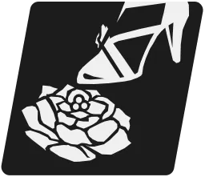
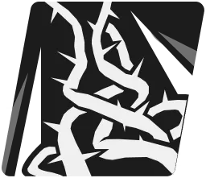
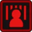
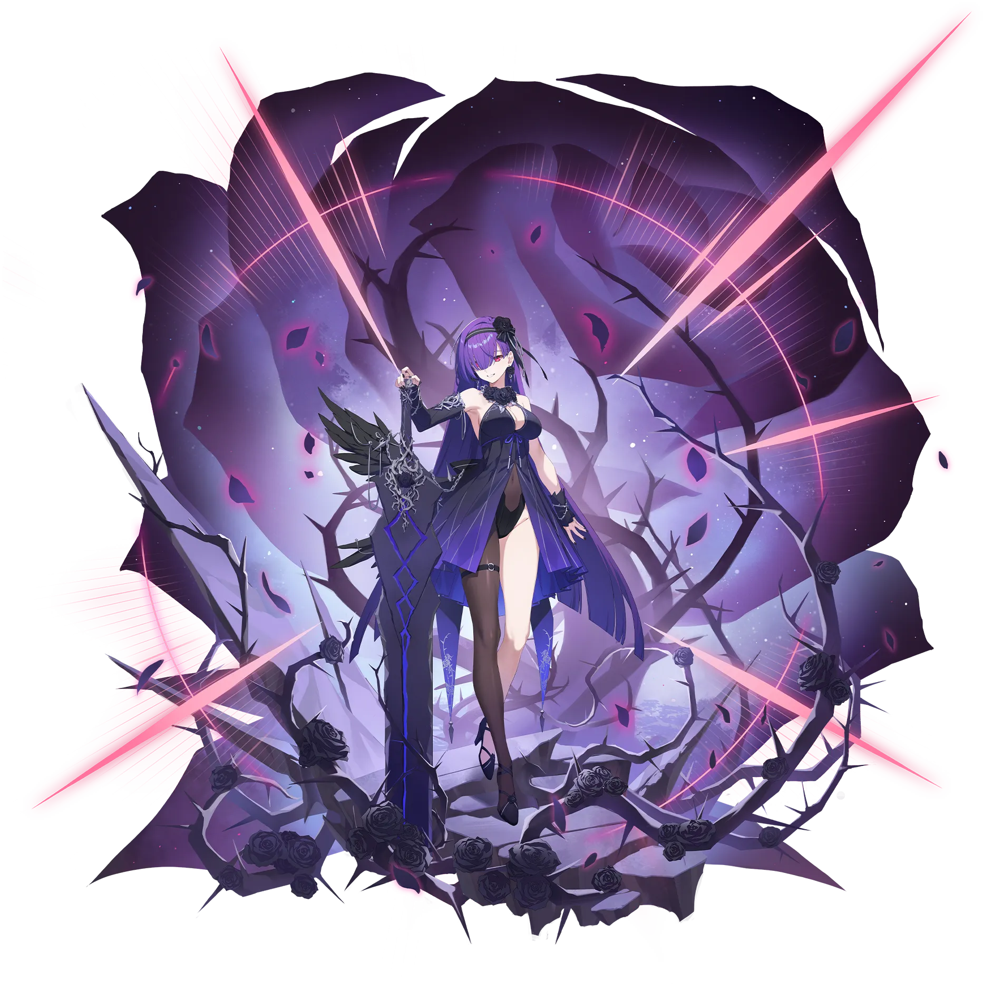

티리아
SSR태양스트라이커참격
모나스티르에서 온 까탈스러운 소녀. 평소에는 도도하고 우아한 말투를 유지하지만, 화가 나면 거칠고 험한 언사가 튀어나오기도 한다.
기본 스테이터스 (Lv.200)
공격력
3,569
4위
생명력
19,381
13위
방어력
1,434
17위
속도
100
13위
치명타 확률
5%
17위
치명타 피해
50%
10위
효과 적중100%
효과 저항0%
명중률100%
여정 스테이터스
힘180
체력140
인내20
집중10
보호10
공명 잠재력
Lv.3공격의 감각
공격력이 일정 비율만큼 소폭 증가합니다.
Lv.6생명의 감각
최대 생명력이 일정 비율만큼 소폭 증가합니다.
Lv.10공격의 솜씨
공격력이 2% 증가합니다.

참수의 집행자패시브
티리아의 공격력이 15% 증가합니다. 티리아가 종언의 서곡 혹은 참극의 레퀴엠을 사용 시 적이 참극의 가시(해제불가) 상태이면 방어력을 25% 관통합니다. 종언의 서곡을 사용 후 적에게 100% 확률로 참극의 가시(해제불가)를 1회 발생시킵니다. 종언의 서곡을 사용 후 적의 참극의 가시(해제불가)가 최대 중첩이면 참극의 레퀴엠을 발동합니다.
참극의 가시(해제불가) : 치명적인 위험에 점차 노출됩니다. 최대 3회 중첩됩니다. 명중, 효과 저항, 면역 효과와 관계없이 발생합니다. 시전자가 사망 시 해제됩니다.
1티리아가 종언의 서곡 혹은 참극의 레퀴엠을 사용 시 적이 참극의 가시(해제불가) 상태이면 방어력을 15% 관통합니다. 종언의 서곡을 사용 후 적에게 100% 확률로 참극의 가시(해제불가)를 1회 발생시킵니다. 종언의 서곡을 사용 후 적의 참극의 가시(해제불가)가 최대 중첩이면 참극의 레퀴엠을 발동합니다.
2티리아의 공격력이 5% 증가합니다. 티리아가 종언의 서곡 혹은 참극의 레퀴엠을 사용 시 적이 참극의 가시(해제불가) 상태이면 방어력을 15% 관통합니다. 종언의 서곡을 사용 후 적에게 100% 확률로 참극의 가시(해제불가)를 1회 발생시킵니다. 종언의 서곡을 사용 후 적의 참극의 가시(해제불가)가 최대 중첩이면 참극의 레퀴엠을 발동합니다.
3티리아의 공격력이 10% 증가합니다. 티리아가 종언의 서곡 혹은 참극의 레퀴엠을 사용 시 적이 참극의 가시(해제불가) 상태이면 방어력을 20% 관통합니다. 종언의 서곡을 사용 후 적에게 100% 확률로 참극의 가시(해제불가)를 1회 발생시킵니다. 종언의 서곡을 사용 후 적의 참극의 가시(해제불가)가 최대 중첩이면 참극의 레퀴엠을 발동합니다.
4티리아의 공격력이 15% 증가합니다. 티리아가 종언의 서곡 혹은 참극의 레퀴엠을 사용 시 적이 참극의 가시(해제불가) 상태이면 방어력을 25% 관통합니다. 종언의 서곡을 사용 후 적에게 100% 확률로 참극의 가시(해제불가)를 1회 발생시킵니다. 종언의 서곡을 사용 후 적의 참극의 가시(해제불가)가 최대 중첩이면 참극의 레퀴엠을 발동합니다.
종언의 서곡기본기
적 단일
대검을 들고 적에게 돌진하여 공격합니다. 자신에게 점화 스택을 1개 부여합니다.
대미지 계수
공격력 계수 - 0.65
공격력 계수 - 0.65
점화 : 별 속성 유닛에게 주는 피해량이 1% 증가합니다. 최대 5스택까지 적용됩니다. 부스트 효과는 강화/약화 효과와 무관하게 독립적으로 적용됩니다.
노바 버스트타격 시 일시적으로 자신의 강인도 고정 피해가 1 증가합니다.
1기본 효과
2피해량 1% 증가
3피해량 1% 증가
4피해량 1% 증가
5피해량 1% 증가
6피해량 2% 증가
7피해량 2% 증가
8피해량 2% 증가
9피해량 2% 증가
10피해량 3% 증가

참극의 레퀴엠특수기
5 턴적 단일강인도 피해 1노바 획득 1
가시나무로 속박하고 대검을 우아하게 휘둘러 공격합니다. 타격 시 적이 참극의 가시(해제불가) 상태이면 참극의 가시(해제불가)의 중첩 횟수 당 피해량이 10% 증가하고 적이 디펜더 클래스이면 중첩 횟수 당 피해량이 추가로 50% 증가합니다. 타격 후 적의 참극의 가시(해제불가)를 해제합니다. 타격 시 자신의 점화가 최대 스택이면 피해량이 20% 증가하고 타격 후 점화를 모두 소거합니다. 해당 스킬이 추가로 발동된 스킬이 아니라면 자신에게 3턴 간 속도 증가를 발생시킵니다.
대미지 계수
공격력 계수 - 0.7
공격력 계수 - 0.7
속도 증가 : 속도가 20% 증가합니다.
점화 : 별 속성 유닛에게 주는 피해량이 1% 증가합니다. 최대 5스택까지 적용됩니다. 부스트 효과는 강화/약화 효과와 무관하게 독립적으로 적용됩니다.
참극의 가시(해제불가) : 치명적인 위험에 점차 노출됩니다. 최대 3회 중첩됩니다. 명중, 효과 저항, 면역 효과와 관계없이 발생합니다. 시전자가 사망 시 해제됩니다.
노바 버스트타격 시 일시적으로 자신의 강인도 고정 피해가 1 증가합니다.
1기본 효과
2피해량 1% 증가
3피해량 2% 증가
4피해량 2% 증가
5피해량 2% 증가
6쿨타임 1턴 감소
7피해량 2% 증가
8피해량 3% 증가
9피해량 3% 증가
10피해량 5% 증가
비탄의 크레센도궁극기
6 턴적 전체강인도 피해 1노바 획득 1
대검으로 공간을 베어 모든 적에게 큰 피해를 입힙니다. 자신에게 2턴 간 파쇄를 발생시키고 점화 스택을 2개 부여합니다. 적 전체에게 100% 확률로 참극의 가시(해제불가)을 1회 발생시키고 방어력이 가장 높은 적에게는 100% 확률로 참극의 가시(해제불가)을 3회 발생시킵니다.
대미지 계수
공격력 계수 - 1.6
공격력 계수 - 1.6

파쇄 : 공격력이 10% 증가하고 주는 강인도 고정 피해가 1 증가합니다. 점화 : 별 속성 유닛에게 주는 피해량이 1% 증가합니다. 최대 5스택까지 적용됩니다. 부스트 효과는 강화/약화 효과와 무관하게 독립적으로 적용됩니다.
참극의 가시(해제불가) : 치명적인 위험에 점차 노출됩니다. 최대 3회 중첩됩니다. 명중, 효과 저항, 면역 효과와 관계없이 발생합니다. 시전자가 사망 시 해제됩니다.
노바 버스트타격 시 일시적으로 자신의 강인도 고정 피해가 1 증가하고 타격 후 추가 턴이 발생합니다.
1기본 효과
2피해량 1% 증가
3피해량 2% 증가
4피해량 2% 증가
5피해량 2% 증가
6쿨타임 1턴 감소
7피해량 2% 증가
8피해량 3% 증가
9피해량 3% 증가
10피해량 5% 증가
생일불명
신장163cm
출신불명
소속집행자
CV (KR)강새봄
CV (JP)아베 리카
